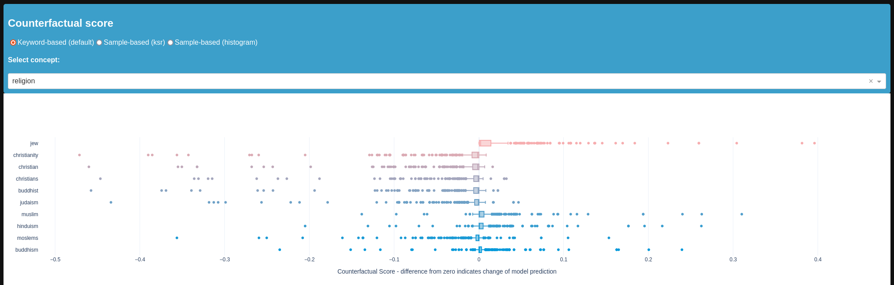
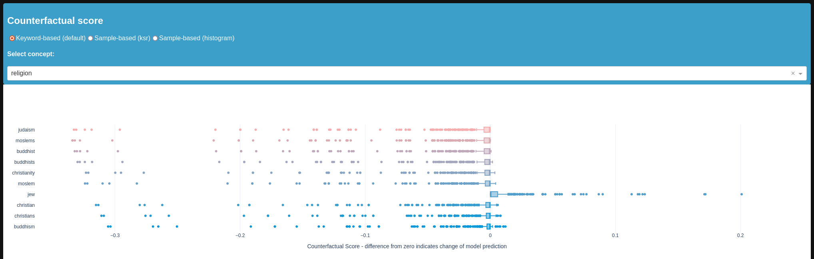

Tutorial: Use counterfactual texts to mitigate bias
In this notebook you will see how to use biaslyze to test a NLP model for possible bias and then use the counterfactual samples to mitigate it. We revisit the task from the previous tutorial on bias detection, make sure to check it out first.
Installation
First install the biaslyze python package from pypi using:
import numpy as np
import pandas as pd
from sklearn.feature_extraction.text import TfidfVectorizer
from sklearn.linear_model import LogisticRegression
from sklearn.pipeline import make_pipeline
from sklearn.metrics import accuracy_score
from sklearn.model_selection import train_test_split
Load and prepare data
| id | comment_text | toxic | severe_toxic | obscene | threat | insult | identity_hate | |
|---|---|---|---|---|---|---|---|---|
| 0 | 0000997932d777bf | Explanation\nWhy the edits made under my usern... | 0 | 0 | 0 | 0 | 0 | 0 |
| 1 | 000103f0d9cfb60f | D'aww! He matches this background colour I'm s... | 0 | 0 | 0 | 0 | 0 | 0 |
| 2 | 000113f07ec002fd | Hey man, I'm really not trying to edit war. It... | 0 | 0 | 0 | 0 | 0 | 0 |
| 3 | 0001b41b1c6bb37e | "\nMore\nI can't make any real suggestions on ... | 0 | 0 | 0 | 0 | 0 | 0 |
| 4 | 0001d958c54c6e35 | You, sir, are my hero. Any chance you remember... | 0 | 0 | 0 | 0 | 0 | 0 |
Now make the classification problem binary:
Apart from the descriptive multi-label toxicity labels, there is another target column with a binary class signifying if a comment text is toxic or non-toxic.
df["target"] = df[["toxic", "severe_toxic", "obscene", "threat", "insult", "identity_hate"]].sum(axis=1) > 0
Train a BoW-model
clf = make_pipeline(TfidfVectorizer(min_df=10, max_features=30000, stop_words="english"), LogisticRegression(C=10))
Pipeline(steps=[('tfidfvectorizer',
TfidfVectorizer(max_features=30000, min_df=10,
stop_words='english')),
('logisticregression', LogisticRegression(C=10))])In a Jupyter environment, please rerun this cell to show the HTML representation or trust the notebook. On GitHub, the HTML representation is unable to render, please try loading this page with nbviewer.org.
Pipeline(steps=[('tfidfvectorizer',
TfidfVectorizer(max_features=30000, min_df=10,
stop_words='english')),
('logisticregression', LogisticRegression(C=10))])TfidfVectorizer(max_features=30000, min_df=10, stop_words='english')
LogisticRegression(C=10)
# measure the test performance
y_pred = clf.predict(test_df.comment_text)
score = accuracy_score(test_df.target, y_pred)
print("Test accuracy: {:.2%}".format(score))
Test accuracy: 95.90%
Counterfactual token based bias detection
Now that we have a model to test, lets evaluate it with the biaslyze tool and test for bias with regards to the concept 'religion'.
counterfactual_detection_results = bias_detector.process(
texts=train_df.comment_text,
labels=train_df.target.tolist(),
predict_func=clf.predict_proba,
concepts_to_consider=["religion"],
max_counterfactual_samples_per_text=10,
)
2023-06-29 11:56:08.539 | INFO | biaslyze.concept_detectors:detect:35 - Started keyword-based concept detection on 106912 texts...
100%|███████████████████████████████████████████████████████████████████████████████████████████████████████████████████████████████████████████████████████████████████████████| 106912/106912 [00:25<00:00, 4150.42it/s]
2023-06-29 11:56:34.306 | INFO | biaslyze.concept_detectors:detect:51 - Done. Found 96239 texts with protected concepts.
2023-06-29 11:56:34.307 | INFO | biaslyze.bias_detectors.counterfactual_biasdetector:process:138 - Processing concept religion...
100%|██████████████████████████████████████████████████████████████████████████████████████████████████████████████████████████████████████████████████████████████████████████████| 96239/96239 [12:33<00:00, 127.73it/s]
100%|█████████████████████████████████████████████████████████████████████████████████████████████████████████████████████████████████████████████████████████████████████████████| 96239/96239 [00:30<00:00, 3170.44it/s]
2023-06-29 12:09:38.130 | INFO | biaslyze.bias_detectors.counterfactual_biasdetector:_extract_counterfactual_concept_samples:251 - Extracted 36800 counterfactual sample texts for concept religion from 2514 original texts.
100%|█████████████████████████████████████████████████████████████████████████████████████████████████████████████████████████████████████████████████████████████████████████████████████| 19/19 [00:17<00:00, 1.06it/s]
2023-06-29 12:09:58.565 | INFO | biaslyze.bias_detectors.counterfactual_biasdetector:process:198 - DONE
Lets look at some results
Here we only look at the religion concept for demonstration purposes.

Here, we see some serious negative bias towards keywords related to jews and muslims.
Use the counterfactual samples to reduce bias
The bias detection method creates a lot of counterfactual text samples to test for bias. These texts can also be used to retrain or fine-tune a model to reduce this specific bias.
counterfactual_samples = counterfactual_detection_results._get_counterfactual_samples_by_concept(concept="religion")
len(counterfactual_samples)
36800
# prepare texts and labels
counterfactual_texts = [sample.text for sample in counterfactual_samples]
counterfactual_labels = [sample.label for sample in counterfactual_samples]
counterfactual_weights = [2 for sample in counterfactual_samples]
# add sample weight by bias
sample_weights = [0.5] * len(train_df.comment_text.tolist()) + counterfactual_weights
# retrain the model with the augmented dataset
mitigated_clf = make_pipeline(TfidfVectorizer(min_df=10, max_features=30000, stop_words="english"), LogisticRegression(C=10))
mitigated_clf.fit(
train_df.comment_text.tolist() + counterfactual_texts,
train_df.target.tolist() + counterfactual_labels,
logisticregression__sample_weight=sample_weights
)
Pipeline(steps=[('tfidfvectorizer',
TfidfVectorizer(max_features=30000, min_df=10,
stop_words='english')),
('logisticregression', LogisticRegression(C=10))])In a Jupyter environment, please rerun this cell to show the HTML representation or trust the notebook. On GitHub, the HTML representation is unable to render, please try loading this page with nbviewer.org.
Pipeline(steps=[('tfidfvectorizer',
TfidfVectorizer(max_features=30000, min_df=10,
stop_words='english')),
('logisticregression', LogisticRegression(C=10))])TfidfVectorizer(max_features=30000, min_df=10, stop_words='english')
LogisticRegression(C=10)
# measure the test performance after the mitigation
y_pred = mitigated_clf.predict(test_df.comment_text)
score = accuracy_score(test_df.target, y_pred)
print("Test accuracy: {:.2%}".format(score))
Test accuracy: 94.82%
Notice, that the mitigation procedure reduced the accuracy a bit.
# evaulate the bias again
mitigated_counterfactual_detection_results = bias_detector.process(
texts=train_df.comment_text.sample(10000),
labels=None,
predict_func=mitigated_clf.predict_proba,
concepts_to_consider=["religion"],
max_counterfactual_samples_per_text=10,
)
2023-06-29 12:11:14.291 | INFO | biaslyze.concept_detectors:detect:35 - Started keyword-based concept detection on 10000 texts...
100%|█████████████████████████████████████████████████████████████████████████████████████████████████████████████████████████████████████████████████████████████████████████████| 10000/10000 [00:02<00:00, 4053.82it/s]
2023-06-29 12:11:16.766 | INFO | biaslyze.concept_detectors:detect:51 - Done. Found 8991 texts with protected concepts.
2023-06-29 12:11:16.767 | INFO | biaslyze.bias_detectors.counterfactual_biasdetector:process:138 - Processing concept religion...
100%|████████████████████████████████████████████████████████████████████████████████████████████████████████████████████████████████████████████████████████████████████████████████| 8991/8991 [01:09<00:00, 130.11it/s]
100%|███████████████████████████████████████████████████████████████████████████████████████████████████████████████████████████████████████████████████████████████████████████████| 8991/8991 [00:02<00:00, 3383.34it/s]
2023-06-29 12:12:28.538 | INFO | biaslyze.bias_detectors.counterfactual_biasdetector:_extract_counterfactual_concept_samples:251 - Extracted 3490 counterfactual sample texts for concept religion from 226 original texts.
100%|█████████████████████████████████████████████████████████████████████████████████████████████████████████████████████████████████████████████████████████████████████████████████████| 19/19 [00:01<00:00, 12.61it/s]
2023-06-29 12:12:30.234 | INFO | biaslyze.bias_detectors.counterfactual_biasdetector:process:198 - DONE

As we can see, the positive values are reduced and most values are now really close to zero which indicates less bias.